药学药品管理信息化规划的运营
技巧与经验分享
内部培训平台
功能介绍 · 核心价值 · 培训指南
规划的运营技巧与经验分享
CONTENTS
药学管理痛点分析
信息化建设关键维度
人员、流程、制度保障
分阶段落地策略
经验总结与避坑指南
评估体系与未来方向
为什么药学药品管理信息化迫在眉睫
CURRENT CHALLENGES & PAIN POINTS
GSP/药品管理法趋严，全程追溯、效期预警、特殊药品闭环管理靠人工记录易漏错；电子签名、审计日志不足，难通过飞行检查
HIS/ERP/WMS/医保系统割裂，60%+机构无法院内互通，数据重复录入；药品编码不统一，同药多码，对账难、统计失真
老系统无API、厂商闭源，升级成本高；多仓/医联体库存不同步；温湿度传感器、自动发药机、冷链设备难统一接入
靠经验定采购，缺AI需求预测；效期预警粗放，过期损耗高；处方审核、配伍禁忌、超量警示弱，基层用药差错风险高
患者隐私、处方数据权限混乱，易泄露；高峰卡顿宕机影响发药结算；中小机构灾备不足，数据丢失风险高
软件+硬件+培训投入高；复合型运维人才缺；上下游数据不通，采购周期长缺货频繁；首营资质、两票制人工核对效率低
药学药品管理信息化
不是简单的手工流程电子化，
而是药学服务模式的深刻变革
构建全方位、一体化的药学管理体系
SIX CORE DIMENSIONS OF INFORMATIZATION
DATA INTELLIGENCE & SYSTEM INTEGRATION
人员、流程、制度三位一体保障
ORGANIZATION & PERSONNEL CONFIGURATION
SYSTEM CONSTRUCTION & PROCESS REDESIGN
分步实施，小步快跑，稳步推进
FOUR-STAGE IMPLEMENTATION ROADMAP
完成基础数据准备：药品字典、供应商、科室人员、药库药房初始化；实施药品进销存管理、基本库存预警；完成与HIS基础对接；建立标准操作流程SOP；完成全员基础操作培训
上线智能处方审核系统；实施PIVAS静脉用药调配管理；麻精药品专项管理上线；建立合理用药知识库；启动试点药房全面运行，收集反馈优化流程
临床药学服务模块全面上线；药品追溯体系对接完成；建立药学数据中心，上线各类统计报表；完成与HRP、EMR等系统深度对接；建立持续优化运营机制
引入AI辅助审方，提升审核准确率；建设药学大数据分析平台；上线用药咨询互联网服务；探索智慧药房、自动发药等前沿应用；形成可复制的信息化管理经验
避坑指南与经验总结
SIX KEY SUCCESS FACTORS
药学信息化是"一把手工程"，需要院领导在资源调配、部门协调上给予强力支持，打破科室壁垒
避免"信息科单打独斗"或"药学部只提需求"，双方组建联合团队，全程参与、共同决策
选择有丰富医院药学经验的服务商，考察同类医院案例，不盲目追求"大而全"或"最低价"
药品字典标准化是基础，建立数据规范和稽核机制，"垃圾进，垃圾出"，数据质量决定系统价值
不同人群制定差异化培训方案，管理层看价值、操作人员讲操作、关键用户要精通，重视变革管理
信息化建设永远在路上，建立常态化需求收集和反馈机制，小步快跑、持续优化，不追求一步到位
RISK ANALYSIS & MITIGATION
| 风险类型 | 具体表现 | 应对策略 | 责任主体 |
|---|---|---|---|
| 需求风险 | 需求不清、频繁变更、范围蔓延 | 建立需求变更管控流程，书面确认，评估影响后再实施 | 项目实施组 |
| 数据风险 | 历史数据质量差、迁移出错 | 数据迁移前充分清洗，多轮核对验证，保留切换窗口期 | 信息药师 |
| 人员风险 | 老员工抵触、学习能力不足 | 一对一帮扶、骨干带教、简化操作、绩效考核引导 | 药房主任 |
| 集成风险 | 与HIS/EMR对接不顺畅 | 尽早启动接口联调，明确各方责任，签订SLA协议 | 信息科 |
| 切换风险 | 新老系统并行期间出错 | 采用试点药房先行、分阶段切换，准备应急预案，保留手工兜底 | 项目实施组 |
量化价值，持续提升
KEY PERFORMANCE INDICATORS
FUTURE DEVELOPMENT PROSPECTS
AI智能审方、用药推荐、异常行为识别、智能预测补库
全自动发药机、智能药柜、分拣机器人、无人值守药房
在线审方、用药咨询、药品配送、慢病管理延伸服务
药学药品管理信息化
始于技术，成于管理，终于服务
让药师回归临床，让患者获得更优服务
功能介绍 · 核心价值 · 培训指南
构建全方位数字化培训体系
SYSTEM FUNCTION OVERVIEW
科室组织架构
角色权限管理
视频课程上传
学习进度追踪
智能组卷安排
自动成绩统计
题库分类管理
题目批量导入
积分等级设置
积分明细查询
商品上架管理
兑换订单处理
站内消息推送
微信模板通知
基础参数配置
操作日志审计
管理员后台 · 全方位培训管控
DASHBOARD & ANALYTICS
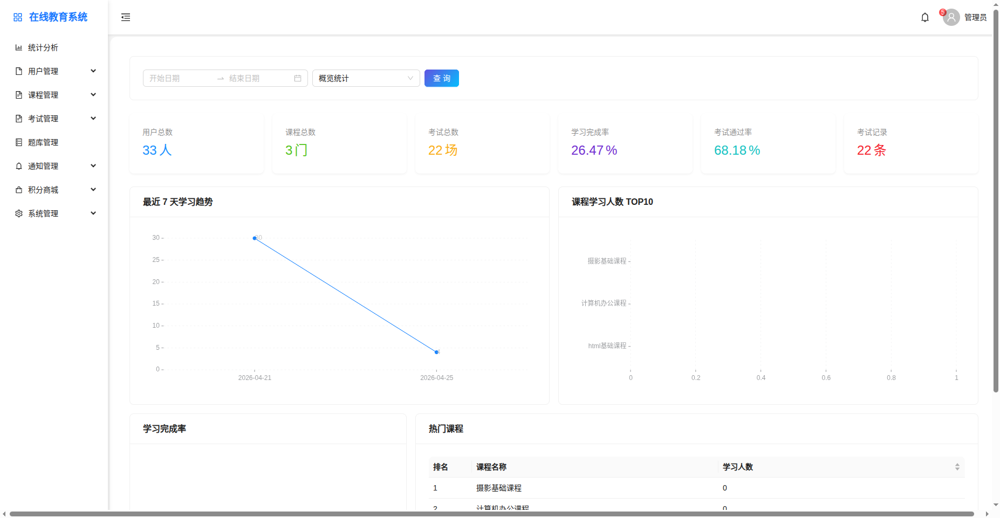
USER & PERMISSION MANAGEMENT
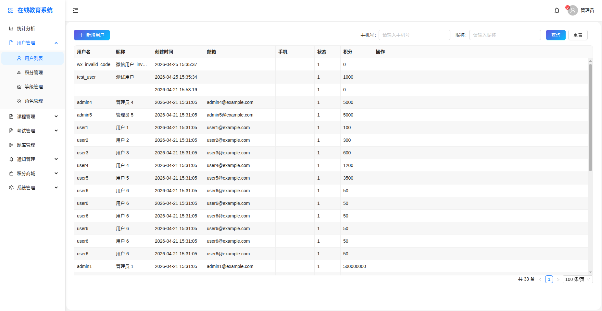
COURSE MANAGEMENT MODULE
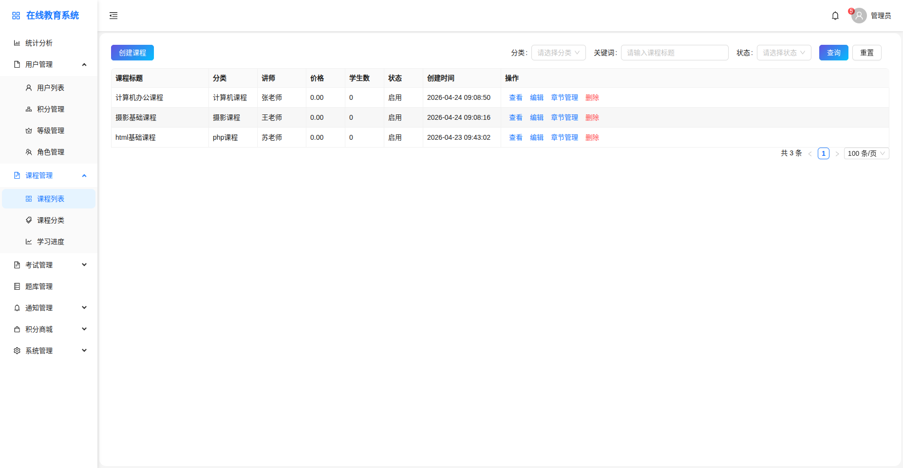
EXAM MANAGEMENT MODULE
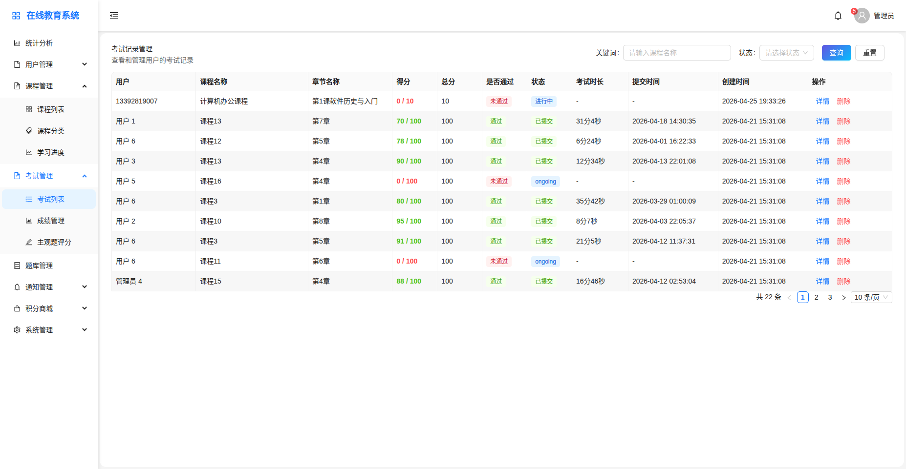
员工端 · 移动学习随时随地
MINI PROGRAM FEATURE MATRIX
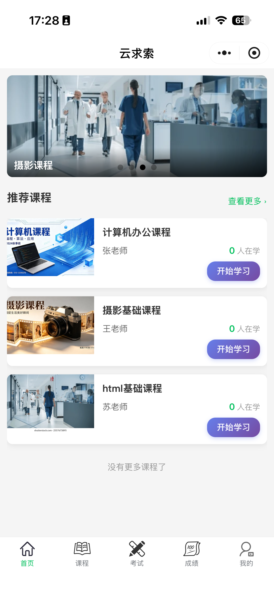
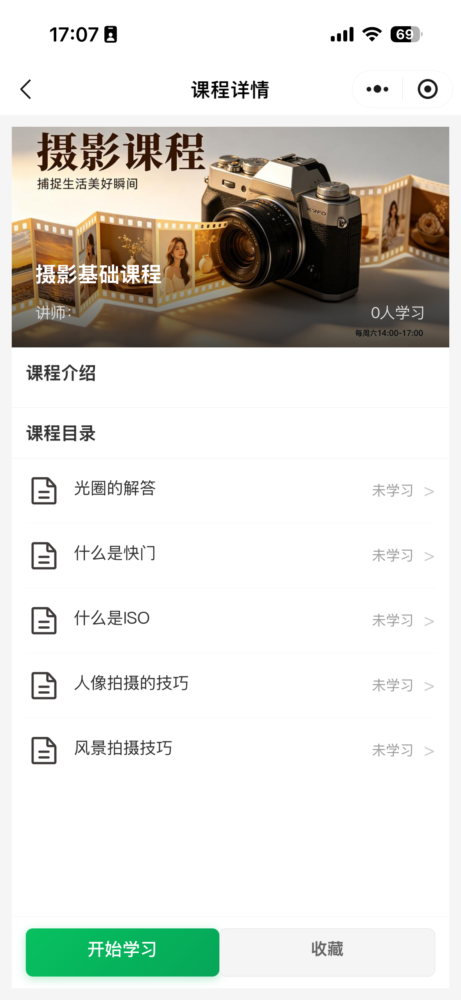
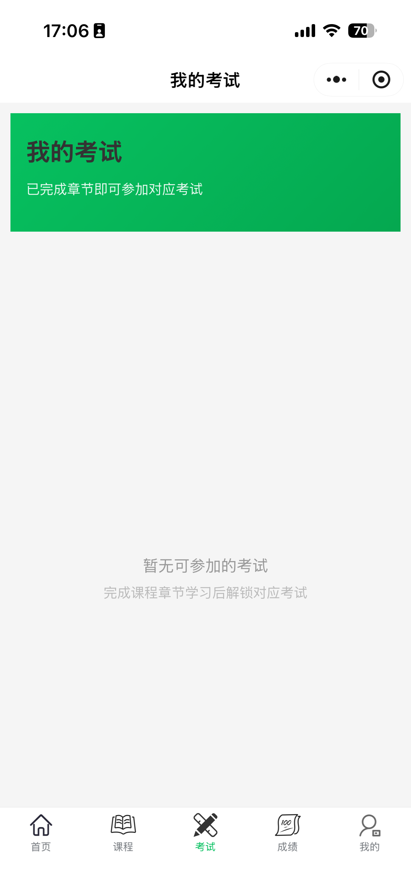
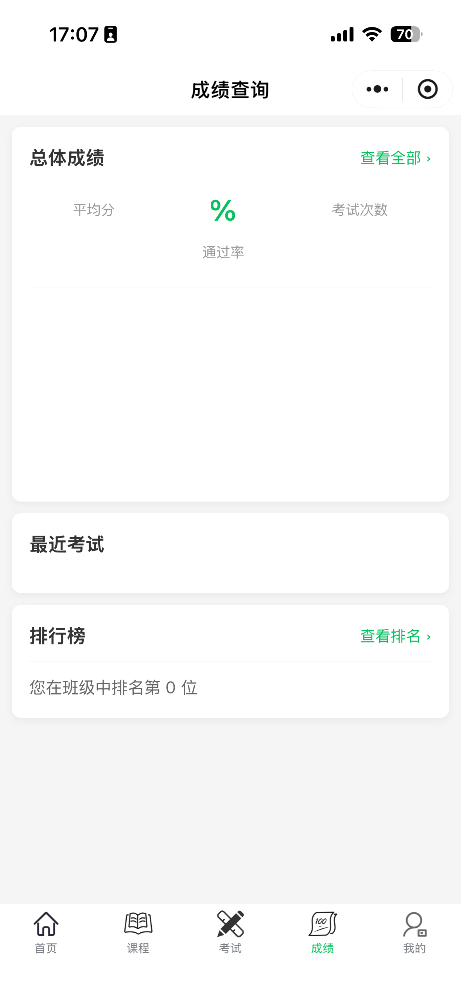
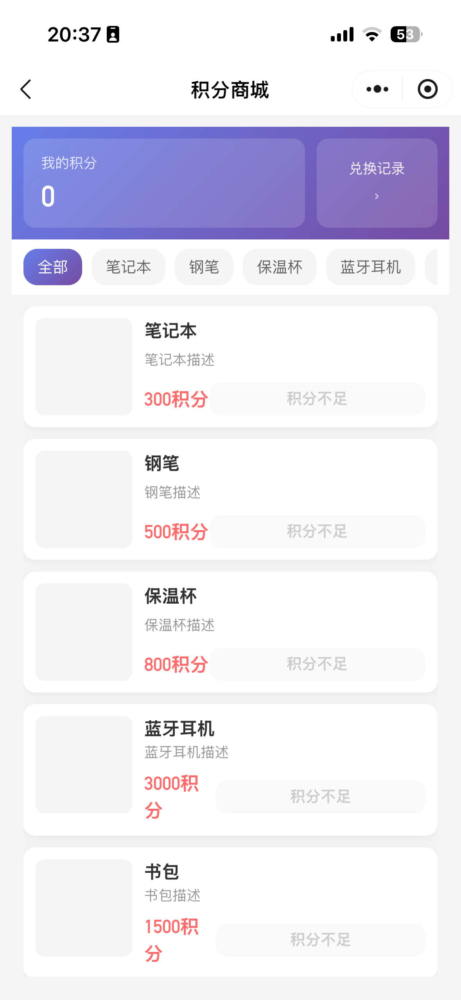
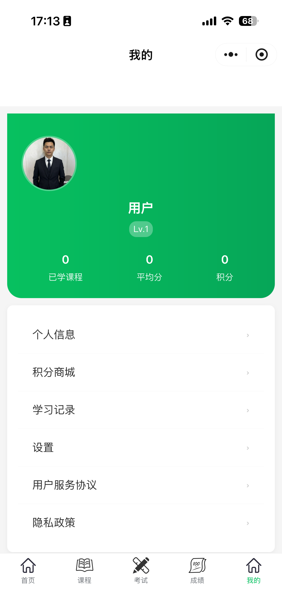
PC MANAGEMENT VS MINI PROGRAM
面向培训管理员 · 全方位管控
面向医护人员 · 移动学习
降本增效，赋能人才发展
让内部培训变得简单高效，
让人员学习随时随地
后台管理系统 · 全流程数字化管控
VALUE FOR HOSPITAL MANAGEMENT
省去纸质印刷、人工改卷、人工统计，大量节省人力物力成本。 自动化流程让培训管理效率提升80%以上。
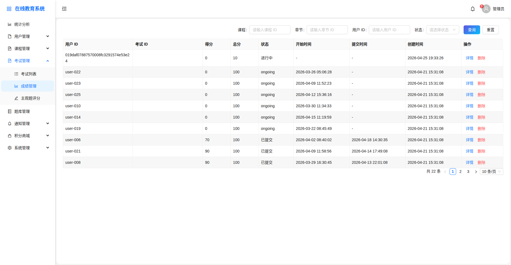
VALUE FOR HOSPITAL MANAGEMENT
谁学了谁没学，学得怎么样，全部数据清晰可见，心里有数。 实时监控学习进度，确保培训效果。
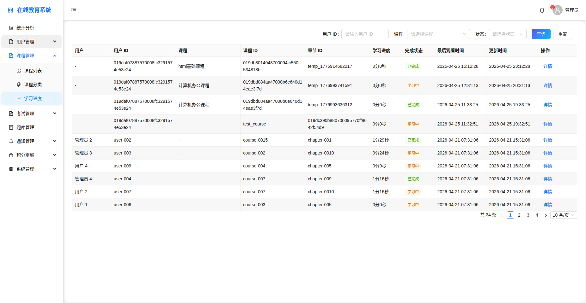
VALUE FOR HOSPITAL MANAGEMENT
培训内容统一，考试标准统一，避免因人而异。 确保全员培训质量一致性，提升整体业务水平。
VALUE FOR HOSPITAL MANAGEMENT
所有课程、考试记录永久保存，随时可查可追溯，满足行业合规审计要求。不需要集中安排时间地点，人员随时随地学习。
微信小程序 · 移动学习随时随地
VALUE FOR MEDICAL STAFF
手机在手，想学就学，不占上班集中时间。微信小程序，无需下载安装，打开即学。可以暂停，可以回看，自己掌控学习节奏。重点难点反复学习，直到真正掌握。
VALUE FOR MEDICAL STAFF
考完立刻出成绩，知道自己掌握得怎么样。错题自动收集，针对性巩固薄弱环节。积分+等级，持续激励主动学习，学习考试获得积分，可在积分商城兑换丰富奖品。
快速上手，轻松掌握
CONTENTS
如何进入小程序、了解首页功能布局
在线观看课程视频、控制学习进度
参加考试、查看成绩、错题复习
查看积分、兑换奖品、常见问题
快速上手，一步到位
STEP BY STEP GUIDE
在手机上打开微信App，确保您已登录微信账号
点击微信顶部搜索栏，输入"云求索"
点击搜索结果中的小程序图标即可进入
点击右上角"..."，选择"添加到我的小程序"，下次更方便找到
自主掌控，学无止境
LEARNING PROCESS
在首页"我的课程"区域，点击想要学习的课程卡片
点击课程详情页的播放按钮开始观看视频
可暂停、拖动进度条、调节音量，自主掌控学习节奏
学习进度自动保存，下次打开可继续学习
LEARNING TIPS
轻松应考，即时反馈
EXAM PROCESS
在首页"我的考试"区域，点击待参加的考试
阅读考试须知后点击"开始考试"，注意考试时长限制
答完所有题目后点击"提交试卷"，确认后即可提交
提交后立即显示成绩，客观题自动评分，主观题待老师批改
学习有回报，积分兑好礼
POINTS SYSTEM
完成课程学习 +10~50积分
通过考试 +20~100积分
每日登录 +5积分
进入积分商城，选择心仪商品
点击"立即兑换"，确认积分足够
填写收货信息，等待发放
在个人中心可查看所有积分收支记录，清清楚楚每一笔
FAQ
信息化建设综合汇报 · 数字化驱动未来发展